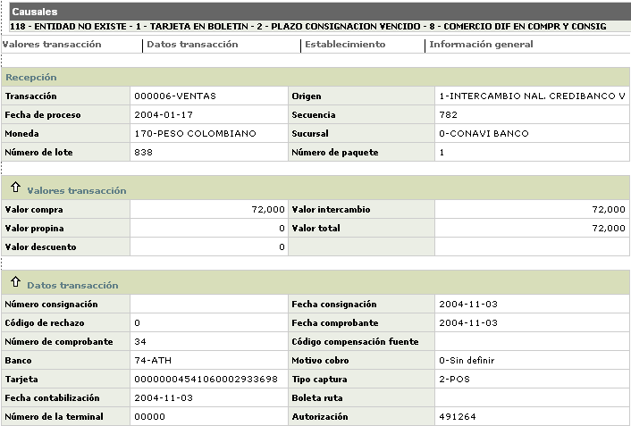
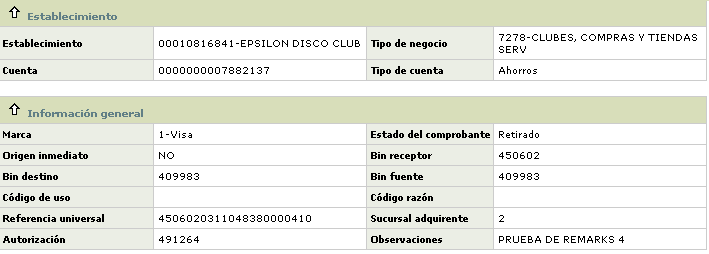

Consulta de retirados
Si como resultado del proceso de solución del movimiento pendiente se decide retirar el movimiento, desde este formulario se consultan todos aquellos registros para los cuales se les haya aplicado esta solución.
Al ingresar a la opción, el formulario desplegado contiene un filtro que permite consultar la información de acuerdo con los criterios seleccionados y que pueden ser la fecha de proceso, el origen, número de tarjeta, transacción, valor total o fecha comprobante. Por defecto al ingresar al formulario este trae todos los registros existentes.

Descripción de campos
|
Fecha proceso |
Este campo permite ingresar la fecha de proceso a consultar, en formato YYYY-MM-DD |
|
Origen |
Campo con lista de valores que permite seleccionar el origen por el cual ingresó el movimiento a consultar. |
|
Tarjeta |
Este campo alfanumérico de hasta 23 caracteres permite ingresar el número de la tarjeta a consultar. |
|
Transacción origen |
Si el actor ha diligenciado información en el campo origen, en este campo se habilita y muestra una lista de valores que permite selecciona la transacción original a consultar. |
|
Valor total |
Campo de hasta 14 enteros y 2 decimales donde se registra el monto total de la transacción a consultar. |
|
Fecha comprobante |
En este campo en formato YYYY-MM-DD se ingresa la fecha del comprobante a consultar. |
Una vez ingresada la información y mediante el botón buscar se despliegan los registros que coincidan con los criterios seleccionados, mostrando los mismos campos contenidos en el filtro.

El formulario solo contiene la opción Detalle.
Detalle: si el usuario selecciona un registro e invoca la opción Detalle, se despliega un formulario en el cual se muestra la información completa de registro y ninguno de sus campos es modificable.
El formulario se encuentra estructurado en cinco bloques en los que se agrupan los datos desplegados con el fin de facilitar su consulta al usuario: Recepción, Valores transacción, Datos transacción, Establecimiento e Información general.
Al ingresar a este formulario, en la parte superior se muestran todas las causales de rechazo que la transacción presentó durante el proceso de validación del movimiento y que determinaron su envío a pendientes.

Descripción de campos
|
Transacción |
En este campo se muestra el código de la transacción original a la que corresponde el registro consultado. |
|
Origen |
Campos que despliega el código y nombre del origen o fuente de donde provino la transacción. |
|
Fecha proceso |
Este campo con formato YYYY-MM-DD muestra la fecha en que se efectuó el proceso del archivo en que viajó la transacción enviada a Movimiento pendiente. |
|
Secuencia |
Campo de salida que muestra el código asignado internamente por el sistema a cada uno de los registros que son enviados a pendientes. |
|
Moneda |
Este campo contiene la Moneda original de la transacción enviada a pendientes. |
|
Sucursal |
Campo de salida que despliega el nombre de la oficina de la entidad por medio de la que ingresó el movimiento. |
|
Número de lote |
Este campo despliega la secuencia o lote de registros dentro del cual se encuentra incluido el registro enviado a pendientes. |
|
Número paquete |
Campo que indica el número del paquete que identifica el movimiento por clase o tipo de transacción, lo que facilita su ubicación en caso de ser necesario. |
|
Valor compra |
Este campo contiene el monto de la transacción sin incluir propinas y otro tipo de impuestos al consumo o las ventas. |
|
Valor propina |
Despliega el valor de las propinas otorgadas por el cliente al establecimiento donde se efectuó la transacción. |
|
Valor descuento |
Campo que indica el monto de los descuentos a aplicar al establecimiento sobre el valor de la transacción por concepto de comisión. |
|
Valor de intercambio |
Este campo muestra el valor neto de la transacción, es decir, el valor del consumo o utilización más valor propina menos valor descuento. |
|
Valor total |
Campo que despliega el valor bruto de la transacción, es deicr, el valor del consumo o utilización más el valor de la propina. |
|
Número de consignación |
Indica el número del recibo de consignación en el cual se incluyó el comprobante correspondiente a la transacción. |
|
Fecha consignación |
Este campo en formato YYYY-MM-DD muestra la fecha en la que se hizo la consignación que contenía el comprobante ante la entidad. |
|
Código de rechazo |
Campo que contiene el código asignado por el procesador para identificar la causa o motivo por la que un registro del archivo de canje enviado le es devuelto a la entidad. |
|
Fecha comprobante |
Este campo en formato YYYY-MM-DD, muestra la fecha en la que se efectuó la transacción. |
|
Número de comprobante |
Campo en el que se despliega el consecutivo que identifica el comprobante que soporta la transacción. |
|
Código compensación fuente |
Este campo contiene el código que identifica al banco emisor de la tarjeta ante el compensador. |
|
Banco |
Campo que muestra el código y nombre de la entidad financiera a través de la cual ingresó la transacción al sistema. |
|
Motivo cobro |
Este campo despliega tanto el código como el nombre asociado a las transacciones de notas débito o crédito generadas como resultado del proceso de intercambio o de efectos o comprobantes al cobro, y que muestran la motivación de esos cargos o abonos Inter entidades. |
|
Tarjeta |
Campo en el cual se muestra el número de la tarjeta débito con la que se hizo la transacción. |
|
Tipo captura |
Este campo señala el nombre asociado al código definido por la franquicia para identificar la manera como ingresó, por medio de su red, la transacción al sistema. |
|
Fecha contabilización |
Campo que muestra en formato YYYY-MM-DD la fecha en la que se contabilizó la transacción en el sistema. |
|
Boleta de ruta |
Este campo despliega si es el caso, el número de la boleta de ruta que permite controlar el movimiento capturado de manera manual por las diferentes oficinas de la entidad. |
|
Número de terminal |
Campo que contiene el número de terminal desde la que se ingresó el depósito electrónico con la transacción de consumo o utilización por parte del establecimiento. |
|
Autorización |
Este campo indica el número de autorización otorgado por el sistema al momento de aprobar la transacción. |
En los bloque de datos Establecimiento e Información general se muestran los siguientes campos:

Descripción de campos
|
Establecimiento |
En este campo se muestra el código del Establecimiento en el que se hizo la transacción. |
|
Tipo de negocio |
Campos que despliega el tipo de servicio autorizado por la franquicia para el establecimiento. |
|
Cuenta |
Este campo contiene el número de cuenta del establecimiento y a la que se le van a hacer los abonos correspondientes a los depósitos. |
|
Tipo de cuenta |
Campo que muetra el tipo de cuenta asociado con el número anterior. |
|
Marca |
Este campo contiene la Marca a la que pertenece la tarjeta con la que se hizo la transacción. |
|
Estado del comprobante |
Campo de salida que despliega el estado actual del comprobante. |
|
Origen inmediato |
Este campo que aplica para las transacciones que al ingresar al sistema no pasaron directamente a pendientes, sino que han transitado por otras etapas o destinos del movimiento, permite identificar la procedencia de la transacción. |
|
Bin receptor |
Campo que contiene el bin centro de proceso de la entidad a través de la cual ingresó la transacción. |
|
Bin destino |
Este campo contiene el bin centro de proceso que identifica a la entidad emisora de la tarjeta con la que se hizo la transacción. |
|
Bin fuente |
Despliega el mismo bin receptor, es decir, indica de donde provino el movimiento. |
|
Código de uso / razón |
Valores o identificadores utilizado en los registros del movimiento de canje internacional. |
|
Observaciones |
Campo que muestra la información adicional registrada por el usuario en el momento de solucionar el movimiento. |
El formulario contiene el globo de localización que permite invocar el formulario en el que se muestra la información correspondiente al valor del impuesto de ventas aplicado a la transacción y al monto que servirá de base para el reintegro del iva, de acuerdo con la normatividad vigente en cada país. Ninguno de los campos desplegados es modificable.